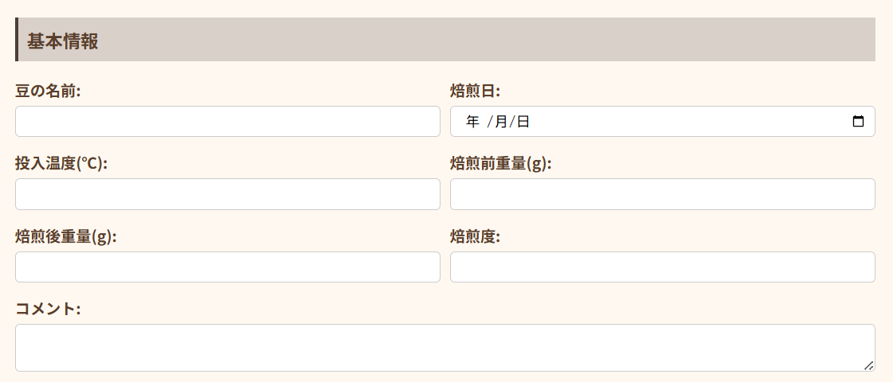
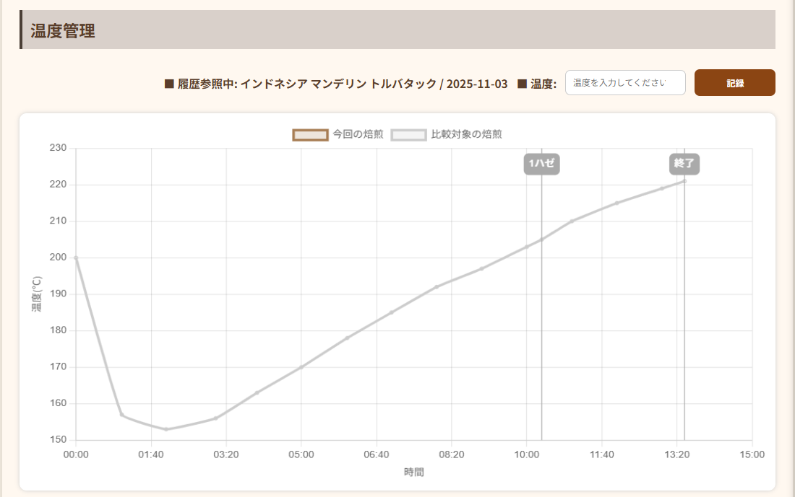
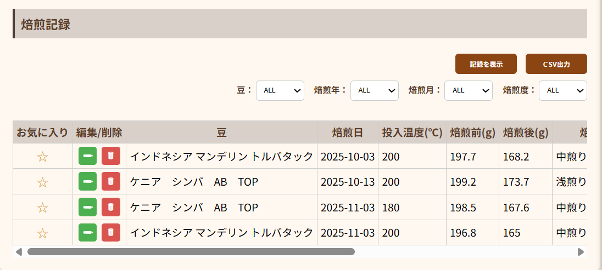

当サービスの利用方法
概要
当サイトでは、個人で自家焙煎をされる方が手軽にコーヒー焙煎のログ記録・管理が行えるよう簡易的なコーヒー焙煎記録管理ツール「COFFEE ROASTING LOG」を提供しています。
1. 基本情報入力
焙煎する豆の情報や日付、コメントなどを記録することができます。入力した情報はいつでも編集・削除が可能です。*編集/削除方法は⑤を参照
・ 豆の名前：焙煎する生豆の名称を入力します。
・ 焙煎日：焙煎を行う日付を選択します。
・ 投入温度(℃)：生豆を焙煎機に投入する温度を入力します。*事前に投入の目標温度を入力しておくと余裕をもって投入ができます。
・ 焙煎前重量(g)：焙煎前の生豆の重量を入力します。*焙煎度の自動判定に利用しますので、ハンドピック後の重量の入力をお勧めします。
・ 焙煎後重量(g)：焙煎終了後に焼きあがった豆の重量を入力します。*焙煎度の自動判定に利用しますので、焼き上がり直後(ハンドピック前)の重量の入力をお勧めします。
・ 焙煎度：浅煎り/中煎り/深煎りを自動で判定します。焙煎指数を“「焙煎前重量」/「焙煎後重量」×100”の形で計算し、計算結果＜1.15=浅煎り、1.15≦計算結果＜1.2=中煎り、1.2≦計算結果=深煎りと判定しています。焙煎度判定の参考にご利用ください。
・ コメント：フリーテキストで焙煎に関するコメントが入力できます。焙煎の目標や結果、プロファイルなどを記録することで振り返りができるようになっています。
2. タイマー
タイマーを起動し、焙煎をスタートします。「開始」を押すと、基本情報に入力した投入温度を開始時点の温度として記録します。また、「1ハゼ」や「2ハゼ」、「終了」ボタンを押すことで焙煎における重要ポイントの時間や温度を記録することができます。

・ 開始：タイマーを開始します。
・ 一時停止：タイマーを一時停止します。
・ 1ハゼ：1ハゼ開始時点の時間と温度を記録します。*時間はボタン押下時点の時間を自動取得しますが、温度は手動入力になります。
・ 2ハゼ：2ハゼ開始時点の時間と温度を記録します。*時間はボタン押下時点の時間を自動取得しますが、温度は手動入力になります。
・ リセット(タイマー/グラフ)：タイマーとグラフの情報をリセットします。「焙煎記録を保存する」ボタンを押す前にリセットを行うとログが消えますのでご注意ください。
・ 終了：タイマーを終了し、焙煎終了時の時間と温度を記録します。*時間はボタン押下時点の時間を自動取得しますが、温度は手動入力になります。
・ 焙煎記録を保存する：基本情報欄で入力した情報と焙煎のログ(時間・温度変化・グラフ)を保存します。*時間経過・温度・グラフは保存後の修正はできません。
3. 温度入力/グラフ表示
タイマーの時間経過を見ながら温度を入力し、グラフを記録していきます。「記録」をクリックすると、クリック時点の時間に対して入力した温度が記録されます。30秒や1分ごとに温度入力を行うことで画面上に自動で焙煎グラフが作成されていきます。
・ 温度：グラフに温度を反映するために温度を入力します。*温度の確認については、ご自身で用意した温度計をご利用ください。
・ 記録：「温度」欄に入力した情報を記録します。記録することでクリック時点の経過時間と共に温度がグラフに自動反映されます。
5. 記録管理
過去の焙煎記録を確認できます。記録の数が増えてきた場合には、「豆」「焙煎年」「焙煎月」「焙煎度」でフィルターをかけて検索することができます。
・ 記録を表示：クリックして過去に保存した焙煎情報を表示します。
・ CSV出力：保存された焙煎情報をCSV形式で出力できます。
・ フィルター機能：焙煎履歴が多い場合などにフィルターをかけて焙煎情報を探すことができます。*フィルターを選択して「記録を表示」をクリックしてください。
・ 焙煎情報一覧：過去の焙煎情報が表形式で確認できます。基本情報に入力した情報が表示され、各行をクリックすることで選択した焙煎記録のグラフが表示されます。。また、うまくいった焙煎記録はお気に入りとして保存することができます。加えて、編集/削除ボタンをクリックすることで情報の編集や削除が可能です。それぞれの焙煎プロファイルに対する味のコメントなどを後で追記すると振り返りに活用できます。